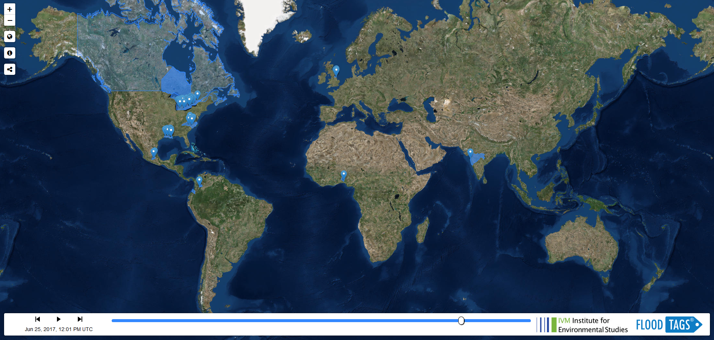
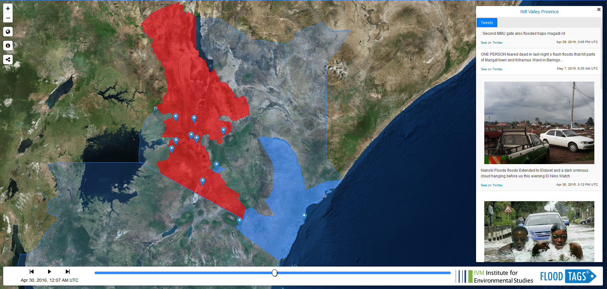
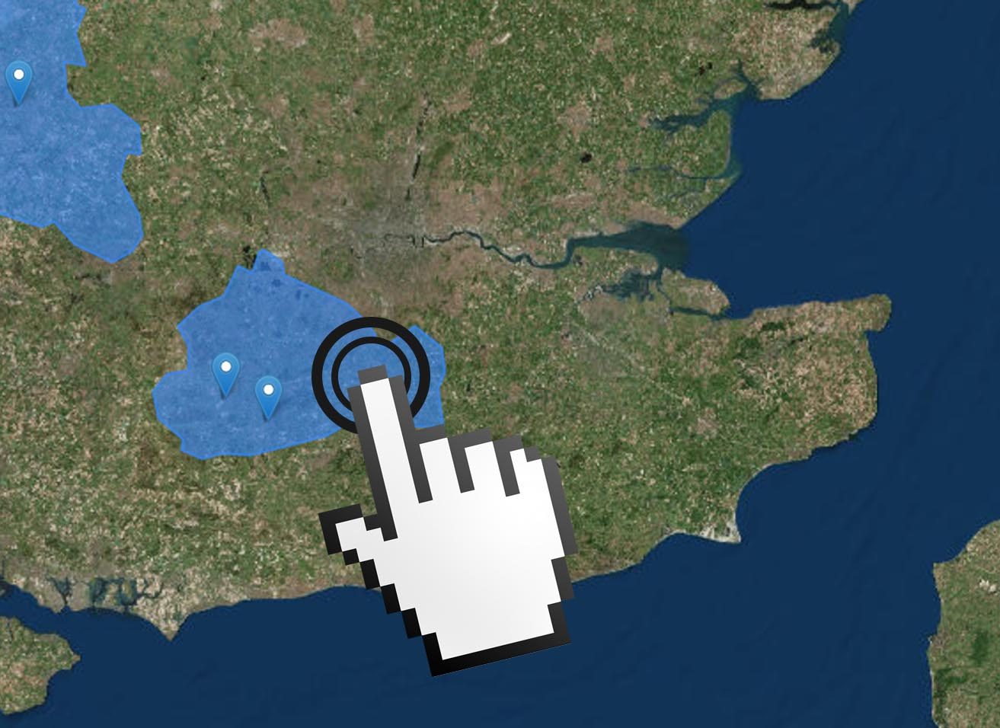

Research
1. A global database of historic and real-time flood events based on social media
Jens A. de Bruijn, Hans de Moel, Brenden Jongman, Marleen C. de Ruiter, Jurjen Wagemaker, Jeroen C.J.H. Aerts
Abstract: Early event detection and response can significantly reduce the societal impact of floods. Currently, early warning systems rely on gauges, radar data, models and informal local sources. However, the scope and reliability of these systems are limited. Recently, the use of social media for detecting disasters has shown promising results, especially for earthquakes. Here, we present a new database for detecting floods in real-time on a global scale using Twitter. The method was developed using 88 million tweets, from which we derived over 10.000 flood events (i.e., flooding occurring in a country or first order administrative subdivision) across 176 countries in 11 languages in just over four years. Using strict parameters, validation shows that approximately 90% of the events were correctly detected. In countries where the first official language is included, our algorithm detected 63% of events in NatCatSERVICE disaster database at admin 1 level. Moreover, a large number of flood events not included in NatCatSERVICE are detected. All results are publicly available on www.globalfloodmonitor.org.
Cite as: de Bruijn, J. A., de Moel, H., Jongman, B., de Ruiter, M.C., Wagemaker, J., & Aerts, J.C.H. (2019). A global database of historic and real-time flood events based on social media. Scientific Data, 6, 311 https://doi.org/doi:10.1038/s41597-019-0326-9
Find the code on GitHub
2. TAGGS: Grouping Tweets to Improve Global Geoparsing for Disaster Response
Jens A. de Bruijn, Hans de Moel, Brenden Jongman, Jurjen Wagemaker, Jeroen C.J.H. Aerts
Abstract: Timely and accurate information about ongoing events are crucial for relief organizations seeking to effectively respond to disasters. Recently, social media platforms, especially Twitter, have gained traction as a novel source of information on disaster events. Unfortunately, geographical information is rarely attached to tweets, which hinders the use of Twitter for geographical applications. As a solution, geoparsing algorithms extract and can locate geographical locations referenced in a tweet’s text. This paper describes TAGGS, a new algorithm that enhances location disambiguation by employing both metadata and the contextual spatial information of groups of tweets referencing the same location regarding a specific disaster type. Validation demonstrated that TAGGS approximately attains a recall of 0.82 and precision of 0.91. Without lowering precision, this roughly doubles the number of correctly found administrative subdivisions and cities, towns and villages as compared to individual geoparsing. We applied TAGGS to 55.1 million flood-related tweets in 12 languages, collected over 3 years. We found 19.2 million tweets mentioning one or more flood locations, which can be towns (11.2 million), administrative subdivisions (5.1 million), or countries (4.6 million). In the future, TAGGS could form the basis for a global event detection system.
Cite as: de Bruijn, J. A., de Moel, H., Jongman, B., Wagemaker, J., & Aerts, J.C.H. (2018). TAGGS: Grouping tweets to improve global geoparsing for disaster response. Journal of Geovisualization and Spatial Analysis, 2(1), 2 https://doi.org/10.1007/s41651-017-0010-6
Find the code on GitHub
3. Improving the classification of flood tweets with contextual hydrological information in a multimodal neural network
Jens A. de Bruijn, Hans de Moel, Albrecht H. Weerts, Marleen C. de Ruiter, Erkan Basar, Dirk Eilander, Jeroen C.J.H. Aerts
Abstract: While text classification can classify tweets, assessing whether a tweet is related to an ongoing flood event or not, based on its text, remains difficult. Inclusion of contextual hydrological information could improve the performance of such algorithms. Here, a multilingual multimodal neural network is designed that can effectively use both textual and hydrological information. The classification data was obtained from Twitter using flood-related keywords in English, French, Spanish and Indonesian. Subsequently, hydrological information was extracted from a global precipitation dataset based on the tweet's timestamp and locations mentioned in its text. Three experiments were performed analyzing precision, recall and F1-scores while comparing a neural network that uses hydrological information against a neural network that does not. Results showed that F1-scores improved significantly across all experiments. Most notably, when optimizing for precision the neural network with hydrological information could achieve a precision of 0.91 while the neural network without hydrological information failed to effectively optimize. Moreover, this study shows that including hydrological information can assist in the translation of the classification algorithm to unseen languages.
Cite as: de Bruijn, J.A., de Moel, H., Weerts, A.H., de Ruiter, M.C., Basar, E., Eilander, D. and Aerts, J.C., (2020). Improving the classification of flood tweets with contextual hydrological information in a multimodal neural network. Computers and Geosciences, 140 https://doi.org/10.1016/j.cageo.2020.104485
Find the code on GitHub
Download
Download all events here.
Explanation of variables:
- location_ID: ID for location. This matches with the geonames database.
- Start: start of the event
- End: end of the event
Contact
Assistant Professor @ Institute for Environmental Studies
Research Scholar @ IIASA
jens.de.bruijn@vu.nl
ResearchGate / Google Scholar


About
Global Flood Detection and Monitoring using Social Media
A new tool for disaster response and validation of flood risk models
Jens A. de Bruijn1,2, Hans de Moel1, Brenden Jongman1,3, Marleen C. de Ruiter1, Jurjen Wagemaker2, Jeroen C.J.H. Aerts1
1 Institute for Environmental Studies, VU University, De Boelelaan 1087, 1081HV Amsterdam, The Netherlands
2 FloodTags, Binckhorstlaan 36 M2.11, The Hague, 2516 BE, The Netherlands
3 Global Facility for Disaster Reduction and Recovery, World Bank Group, Washington D.C., 20433, USA
Over the last 10 years, floods have caused 400 billion euros in damage and caused almost 60.000 casualties. Research shows that rapid response efforts are often hampered due to a lack of timely and useful information. Usually, floods are detected and monitored using hydrological models or satellite imagery. However, many flood events remain unreported and the average time-lapse between start of a flood and flood detected by response organizations is large. More recently, people and organizations have increasingly started using information from online media (e.g., Twitter, Facebook, WhatsApp, news articles and blog posts) to monitor flood events.
As part of ongoing research into the use of online media in flood monitoring, researchers at the Institute for Environmental Studies (IVM - VU University Amsterdam) and FloodTags released a new paper1 and tool that globally detects and monitors flood events. It provides a real-time overview of ongoing flood events based on filtered Twitter data. Specifically, the global flood monitor (GFM) detects, in real-time, regions with enhanced flood-related Twitter activity and classifies these as flood events. Then, it generates a world-map visualizing these events (Figure 1) and their relevant tweets. The platform also provides access to historical events dating back to July 2014.

Data collection and filtering
FloodTags collects, among other data, real-time Twitter data using Twitter’ streaming API. The GFM utilizes this data in 12 languages using the keywords as specified in (Table 1).
| Language | Keywords |
|---|---|
| English | flood, floods, flooding, flooded, inundation, inundations, inundated |
| Indonesian | banjir, banjirjkt, bantubanjir |
| Filipino | baha, bumabaha, pagbaha |
| French | inonder, inondation |
| German | flut, hochwasser, Überflutung |
| Italian | inondazione, inondacioni, alluvione |
| Dutch | overstroming |
| Polish | powódź, powodzie |
| Serbian | poplava, poplave, поплава, поплаве |
| Portuguese | inundação, inundacão, inundaçao, inundacao, inundações |
| Spanish | inundación, inundacion, inundar, inundaciones |
| Turkish | su taşkın, su baskını, sel bastı, sel suyu, sel yüzünden, taşkın oldu, sel suyunun |
On average this amounts to roughly 75,000 flood-related tweets a day. Naturally, the number of tweets highly varies depending on the characteristics of currently ongoing flood events. For example, when Hurricane Harvey made landfall in the USA, upwards of 600,000 tweets were posted within 24 hours.
Location extraction
To detect enhanced Twitter activity in regions, locations need to be attached to tweets. Unfortunately, merely ~2% of tweets have the GPS location of the user at the time of posting available. An additional problem in using these GPS locations is that when a major flood event occurs, such as the hurricanes that hit several countries around the Caribbean Sea and the Gulf of Mexico, these events might receive news coverage from all around the world. This might result in enhanced flood-related activity in many locations around the world.
Therefore, we created the TAGGS-algorithm2,3 (Toponym-based Algorithm for Grouped Geoparsing of Social media) to find mentions of locations (i.e., countries, administrative subdivision, cities, towns and villages) in tweets. This roughly employs two steps: 1) toponym recognition and 2) toponym disambiguation. In the first step the sentence is split up into individual words (unigram) as well sequences of individual words up to a length of 3 (bigrams and trigrams). These n-grams are then matched to the near-comprehensive set of geographical locations (gazetteer) as created using the GeoNames database4 (Figure 2).
[
{
"geonameid": 2655138,
"coordinates": [
-0.02664,
52.97633
],
"time_zone": "Europe/London",
"country_geonameid": 2635167,
"adm1_geonameid": 2644486,
"feature_code": "PPL",
"feature_class": "P",
"type": "town",
},
...
{
"geonameid": 4930956,
"coordinates": [
-71.05977,
42.35843
],
"time_zone": "America/New_York",
"country_geonameid": 6252001,
"adm1_geonameid": 6254926,
"feature_code": "PPLA",
"feature_class": "P",
"type": "town",
}
]
Unfortunately, many place names (toponyms) can refer to multiple locations (e.g., Boston, UK and Boston, Massachusetts, USA). To disambiguate the toponyms, the algorithm first groups all tweets mentioning the same toponyms within a 24-hour timeframe. Then for all tweets within these groups, additional spatial indicators, such as user time zone, user home town, GPS location and other location mentions in a tweet’s text are analyzed. Based on these indicators the most likely location is selected for all tweets within the group (Figure 3).
{
"id": 495901924215250944
"date": "2014-08-03T12:00:06",
"retweet": false,
"text": "Red River at Grand Forks is 18.53 feet, -9.47 feet of flood stage, -35.82 feet of 1997 crest. #RRVFlood14",
"lang": "en",
"user": {
"utc_offset": -18000,
"time zone": "Central Time (US & Canada)",
"location": "Grand Forks, ND",
},
"locations": [
{
"score": 1,
"toponym": "grand forks",
"country_geonameid": 6252001,
"geonameid": 5059429,
"coordinates": [
-97.03285,
47.92526
],
"adm1_geonameid": 5690763,
"type": "town"
}
]
}
Filtering
Because not all tweets that mention a flood-related keyword are about ongoing flood events and a large number of tweets contain duplicate information, the tweets are subsequently filtered. First, we trained a classification algorithm based on a neural network (BERT5), and use this to discard tweets that are not about ongoing flood events. Next, we discard (near-) duplicate information, by not considering a) retweets, b) tweets by users that already posted a flood-related tweet in the last 14 days about that particular region and c) tweets where 5 or more consecutive words matched those of on of the previous 100 tweets about a region.
Event detection
The GFM conducts event detection at the level of a country and their first order administrative subdivisions (e.g., provinces in the Netherlands and states in the USA). Based on the locations mentioned, tweets are assigned to these regions. Tweets mentioning a country are assigned to the country and tweets mentioning a first order administrative subdivision or a geographic entity therein are assigned to the first order administrative subdivisions.
Then, burst detection is performed by analyzing the time difference between several consecutive tweets assigned to a region. When the time difference between several consecutive tweets falls below a region-specific threshold, this burst is classified as a flood event. An example thereof is given in Figure 4 for the Rift Valley Province in Kenya.

Potential applications
- Flood awareness
The GFM demonstrates the prevalence of floods in the world and their impact on communities. The tweets, often sent by affected people, show that, almost on a daily basis, people need to be evacuated, lose their homes and even lose their lives due to floods. Even though many people work towards reducing flood risk and mitigating their impact, further efforts to reduce the impact of flood events on people’s lives are required. - Disaster response
Disaster relief organizations increasingly use online media to improve their situation awareness. The FloodTags dashboard uses, after careful validation within a specific region, parts of the GFM. In the dashboard and corresponding API’s, localized tweets are combined with other information (e.g., WhatsApp, rainfall measurements, river discharge data, maps of likely flooded and impacted areas) to create a tool that can be used to enhance the situation awareness of local aid organizations. This dashboard is currently operational at the Philippine and Tanzanian Red Cross. - Reference database
Many minor flooding events remain unreported. Although social media cannot provide an extensive overview of all flood events, many events that are not available in other disaster databases are detected. The platform also provides access to these historic events going back to July 2014. These historic events can be used, for example, as a reference for validation of various flood risk models and historic flood mapping. It should be noted, that the available events are not manually validated and are incomplete. Before using the data, the user should carefully assess the quality of the data for their application (or contact FloodTags or IVM for support in this). - Social media guided satellite tasking
Finally, when satellites observe the earth, their cameras can be pointed towards areas of interest. When a flood event is detected using, for example social media, these satellites can be tasked to observe the impacted area and thus provide more information about a specific event.
1. de Bruijn, Jens A., et al. Scientific Data 6.1 (2019): 1-12. https://doi.org/10.1038/s41597-019-0326-9↩
2. de Bruijn, Jens A., et al. Journal of Geovisualization and Spatial Analysis 2.1 (2018): 2. https://doi.org/10.1007/s41651-017-0010-6↩
3. TAGGS source code on GitHub↩
4. www.geonames.org↩
5. Devlin, Jacob, et al. arXiv preprint arXiv:1810.04805 (2018). http://arxiv.org/abs/1810.04805↩
Info
The Global Flood Monitor detects flood events by automatically analyzing tweets in 11 languages*. Both the historic and real-time events are shown here. Click here for more information.

Click on a flood event to display tweets.
Move the slider, or use the play buttons to display floods through time.
*Please note that the displayed data has not been validated and manually calibrated on a country by country basis and should thus not be used for decision making.